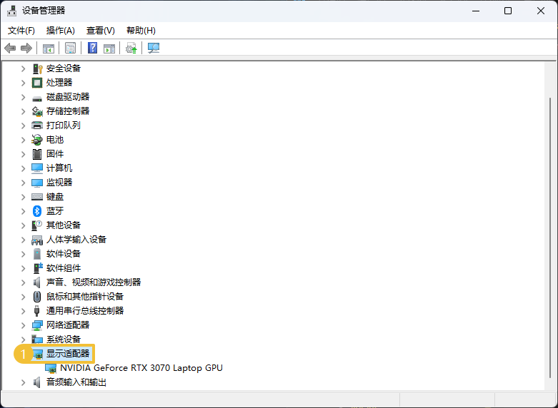
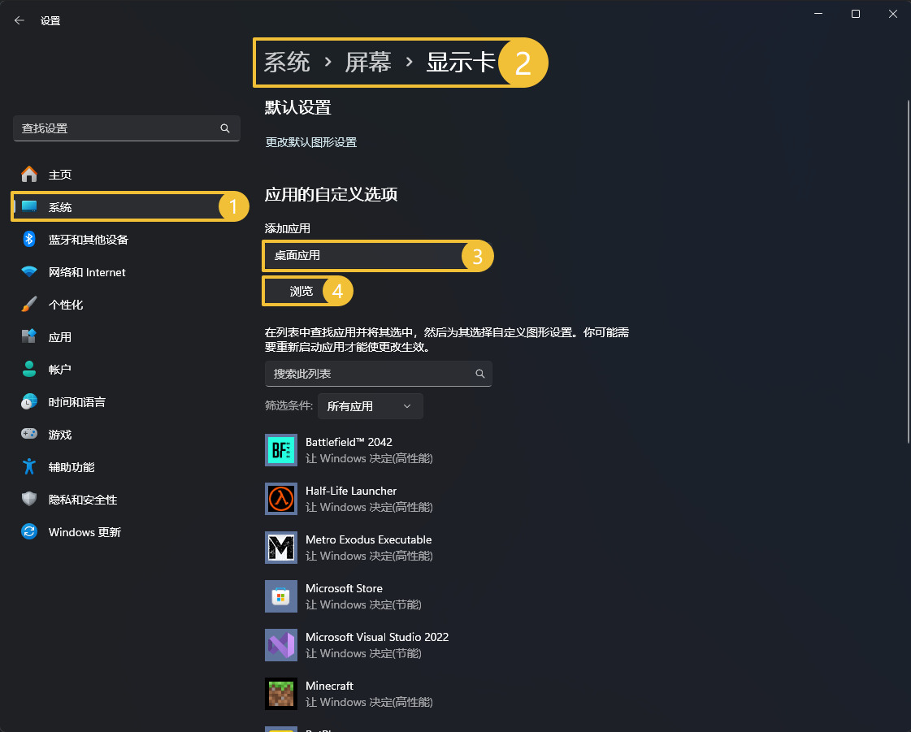
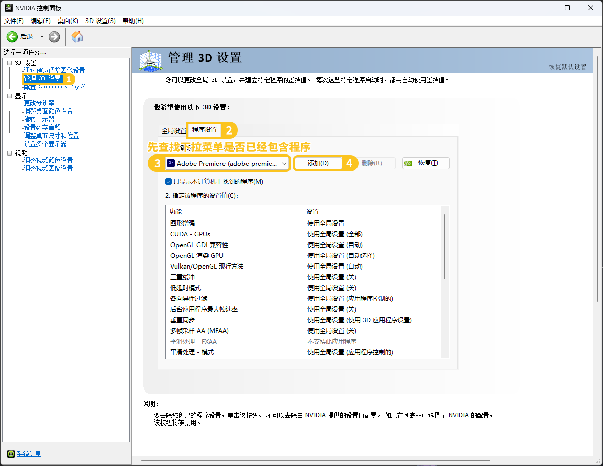

通用问题
这篇文档记录了一些与游戏相关或会产生影响的常见问题。
我想知道电脑的配置
对于 Minecraft 来说，性能需求的下限和上限可谓大相径庭，下到树莓派流畅运行，上到专业游戏主机也会吃力。
大多数玩家处于中间的区段，而由于或是使用家庭电脑，或是在外借用电脑，希望对配置能有一个快速的查询。
这里我们列出在不安装额外软件的情况下，Windows 上快速查询电脑配置的办法。
查询电脑 CPU 和内存容量
右击 此电脑 或 计算机 ，点击 属性 即可查看 CPU 和内存。
查询电脑显卡
为了确定是否安装显卡，我们可以在设备管理器中查询电脑已识别的显卡列表。
方法1
右击 开始菜单 或按下 WindowsX ，选择 设备管理器。
方法2
打开
开始菜单，搜索设备管理器或device manager或device mgr。进入设备管理器，向下找到
显示适配器，展开即为已识别的显卡。
独立显卡没有正确启用
已知电脑有不错的独立显卡，但是游戏帧率还是过低，这时就应该注意是否正确安装显卡驱动并启用对应的显卡。
安装显卡驱动
根据已知的显卡型号和系统前往官网下载并安装即可，如果不确定，他们也提供了对应的检查工具。
安装完毕之后，你应在设备管理器中看到对应的显卡。
选择运行 GPU
有些电脑含有集成显卡或 CPU 核心显卡 ，这种情况下需要在 GPU 驱动程序中选择运行程序所使用的 GPU。
在 Windows 11 下，你可以直接在 设置 > 系统 > 屏幕 > 相关设置 - 显示卡 中调整 GPU。
对于 Java 版来说，选择
应用的自定义选项 - 添加应用 <桌面应用> - 浏览，找到你的 Java 安装路径 ，添加bin/java.exe，然后在下面的列表中，将它们调整为高性能。 对于基岩版来说，你通常可以在下方菜单栏中直接找到，并且它的默认模式是
让 Windows 决定(高性能)。如果软件不存在，你可以在应用的自定义选项 - 添加应用 <Microsoft Store 应用> - 浏览弹出的列表中寻找并添加。你也可以将其设定为高性能来强制使用独立显卡运行，避免出现问题。
在 Windows 10 以及更老的版本中，你需要打开 驱动程序控制面板 ，并寻找类似 程序设置 的选项卡。
Nvidia：
 AMD：
Intel 独立显卡 Intel Arc 系列极其罕见，大多数时候都是核心显卡，安装驱动之后不需要设置就可以直接使用。